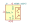
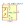

<table>
<tr>
<th>Symbol</th>
<th>Description</th>
</tr>
<tr>
<td><br>AFBR-1624Z</td><td>Description: Versatile Link Fiber Optic Transmitter<br>Keys: Fiber optic transmitter<br>Datasheet: <a href="https://docs.broadcom.com/docs/AV02-4369EN">https://docs.broadcom.com/docs/AV02-4369EN</a></td>
</tr>
<tr>
<td><br>AFBR-2624Z</td><td>Description: Versatile Link Fiber Optic Receiver<br>Keys: fiber optic receiver<br>Datasheet: <a href="https://docs.broadcom.com/docs/AV02-4369EN">https://docs.broadcom.com/docs/AV02-4369EN</a></td>
</tr>
</table>
